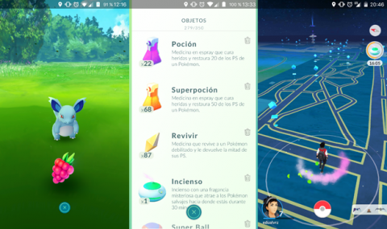

Guía Pokémon GO: para novatos, trucos y consejos
Pokémon GO es el juego para móviles Android y iPhone de 2016. Ya está disponible prácticamente a nivel mundial, incluyendo España, donde se puede descargar desde Google Play y la Apps Store. Si todavía no lo tienes y te apetece empezar a atrapar criaturas por las calles, prepárate para empezar porque te contamos cómo dar tus primeros pasos con Pokémon GO, con algunos trucos y consejos para que convertirte en el mejor entrenador.

-
Captura un Pokémon
Para atrapar un Pokémon tienes que moverte por las calles y dar con ellos. Verás tu avatar en el mapa, que se desplazará en la misma dirección en la que camines. Ten en cuenta que el juego toma los datos de la ubicación a través del GPS de tu smartphone, por lo que puedes encontrar problemas al jugar en interiores. Simplemente será mucho más difícil que te aparezcan ejemplares.Puedes cambiar la vista con ampliar o reducir la pantalla. El gesto es el mismo que se realiza para ampliar una foto en cualquier dispositivo móvil. Con el zoom al mínimo, serás más consciente de tus alrededores en el mapa, aunque a efectos prácticos la jugabilidad será la misma.
A medida que te muevas, irán apareciendo las criaturas que se encuentran cerca de ti. Si pulsas en el recuadro de la esquina inferior derecha en la pantalla del mapa podrás ver las siluetas de los que están localizados a poca distancia.

Revisa las estadísticas de tus Pokémon
En la Pokédex tienes a tu disposición una lista con todos los Pokémon que puedes encontrar, un número indeterminado aún, a falta de saber qué ocurrirá con los legendarios. Cada uno de ellos tienen un número y un recuadro. Los que hayas cazado estarán en su sitio y podrás consultar toda su información, mientras que los que hayas visto y no hayas conseguido capturar mostrarán su silueta. El resto no sabrás cuáles son y no tendrás acceso a ningún dato sobre ellos.
En el apartado Pokémon del menú puedes ver a todas las criaturas que has capturado. Aquí puedes consultar los puntos de combate máximos de cada uno, así como su nivel de vida, y puedes acceder a sus detalles. En su ficha tienes la opción de mejorar su nivel dándoles polvos estelares y caramelos, aunque es recomendable guardar ambos objetos para cuando captures criaturas de más nivel. Al acceder a una de tus criaturas, justo debajo verás el lugar donde fue atrapado.

Combate en los gimnasios
Para poder combatir contra otros usuarios tienes que acudir a un gimnasio, y es necesario que hayas alcanzado el nivel 5 para participar. Los gimnasios también están marcados en el mapa con un icono distintivo. Estos lugares están controlados por equipos de usuarios, a los que podrás unirte llegado a ese nivel. Son tres: azul, rojo y amarillo.
Cuando encuentres un gimnasio vacío, asigna a uno de tus Pokémon para reclamarlo, y cuando quieras echarle una mano a un gimnasio amigo tienes la opción de añadir una de tus criaturas para ayudarle a defenderlo de posible ataques. Además, entrenando allí a tus criaturas puedes aumentar el prestigio y el nivel del lugar.Para poder combatir y entrenar en gimnasios necesitarás cierto nivel. En los más bajos no podrás hacer nada, sólo a partir del nivel 5. Posteriormente, por cada nivel que subas accederás a mejores gimnasios. El nivel del gimnasio depende del prestigio, y éste de la cantidad de combates que se hayan librado en él.
Si quieres, puedes desafiar a los ocupantes de los gimnasios de tu propio equipo. De esta forma ganarás experiencia. Incluso podrás luchar contra las criaturas que tú mismo tengas asignadas para defedenderlo. Es recomendable dejar primero un Pokémon débil para desafiarlo y derrotarlo repetidas veces. De esta forma subirás el prestigio del gimnasio y ganarás 100 XP por cada victoria.
En caso de encontrar el gimnasio de un equipo rival, tienes la posibilidad de desafiarlo para que disminuya su nivel. Cuando entres en combate, desliza el dedo a derecha e izquierda para esquivar los ataques y empléate a fondo para acertar los tuyos.